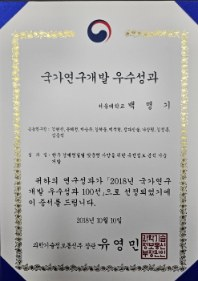
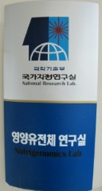

연혁
2026
단위 축협 유전능력 맞춤형 서비스 실시 (계속)08
농촌진흥청 한우 연구과제 선정 (2026.04 ~ 2030.12: 4년 8개월)04
한우 농가 유전능력 맞춤형 서비스 실시 (계속)02
2025
단위 축협 유전능력 맞춤형 서비스 실시06
한우 농가 유전능력 맞춤형 서비스 실시02
2024
실험실특화형 창업중심대학 사업선정 (중소벤처기업부: 1억원)06
기업부설연구소 설립 인가10
창업 디딤돌 과제 선정 (중소기업벤처부: 1.2억원)10
시드 투자 유치: 3억원11
2023
‘한우 유전능력 맞춤형 사료설계 검증 논문’ 국제학술지 ‘Animal’에 발표04
교육부·과기정통부 지원 혁신창업실험실 선정05
주식회사 에이아이에코젠랩 설립10
2021
‘혈통정보 및 유전정보 육종가를 이용한 한우 암소의 활용 유형 결정 시스템’에 대한 특허 획득
2018
‘한우 경제형질별 맞춤형 사양을 위한 유전정보 분석 기술 개발’로 과기정통부의 ‘국가연구개발 우수성과 100선’ 선정

2005
과학기술부 지정 ‘영양유전체 (Nutrigenomics)’ 연구실 선정
